| ID | 問題 | 答え | 解説 |
|---|---|---|---|
| Lv04_Ca014_0001 | びび | 恥ずかしがる。また、おじけづく。 | |
| Lv04_Ca014_0002 | ひやりはっと | 災害には至らない程度の事象のこと。 | |
| Lv04_Ca014_0003 | 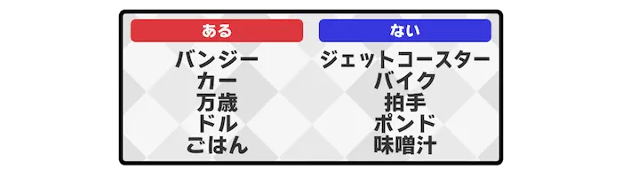 |
ばん | あるほうには、頭に『ばん』を付けても単語として成立するとされる。 |
| Lv04_Ca014_0004 | ふりーまーけっと | 町の広場などで開かれる古物市。実は『フリー』は『ノミ[(flea)]』を指す。 | |
| Lv04_Ca014_0005 | てんぷれーと | 時候の挨拶やお礼、お詫びなどの決まった言い回し。『テンプレ』と略される。 | |
| Lv04_Ca014_0006 | にっしょく | 月が太陽の前を横切るために、月によって太陽の一部が隠される現象。 | |
| Lv04_Ca014_0007 | 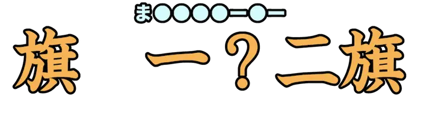 |
まいんすいーぱー | 地雷原から地雷を取り除くことが目的の、一人用のコンピュータゲーム。 |
| Lv04_Ca014_0008 | 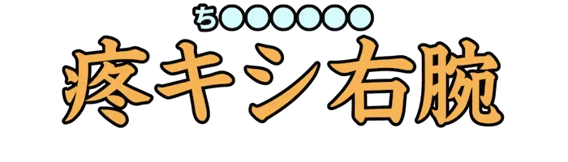 |
ちゅうにびょう | やめろ…これ以上、俺に近づくな…ッ！！『號[(さけ)]ぶ』ぜ…この右腕がな…！！うおおおおおおおッ！！ |
| Lv04_Ca014_0009 | 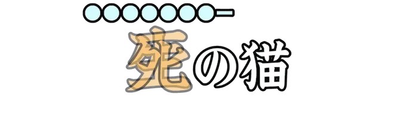 |
しゅれでぃんがー | 猫を使用した、量子力学に関する思考実験。 |
| Lv04_Ca014_0010 | 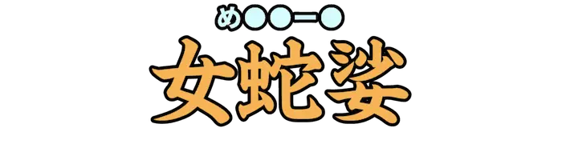 |
めどぅーさ | ギリシャ神話に登場する怪物。見た者を恐怖で石のように硬直させてしまう。 |
| Lv04_Ca014_0011 | たべかけ | 食べている途中でやめた食べ物。飲食ジャンルにすな。 | |
| Lv04_Ca014_0012 | しるばーうぃーく | 日本の秋の、文化の日を中心とした休日が多い期間。 | |
| Lv04_Ca014_0013 | ひっかけもんだい | 誤った答えを出すような種などを仕込んで、正答を出しにくくしたクイズ。 | |
| Lv04_Ca014_0014 | 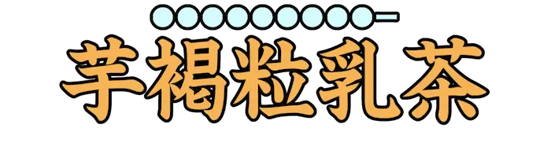 |
たぴおかみるくてぃー | ミルクティーに大粒のタピオカパールを入れた、台湾発祥の飲料。 |
| Lv04_Ca014_0015 | らぐ | 俗に、操作と画面に時間差が生じること。 | |
| Lv04_Ca014_0016 | とんぼがえり | どこいくねーん！ | |
| Lv04_Ca014_0017 | とうだいもとくらし | 灯台のすぐ下は暗いことから、身近な事情はかえってわかりにくいたとえ。 | |
| Lv04_Ca014_0018 | 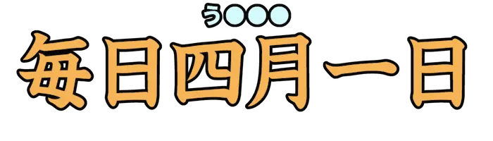 |
うそつき | 嘘を言うこと。また、嘘をよくつく人。 |
| Lv04_Ca014_0019 | すけるとん | 骸骨のこと。また、内部の構造が透けて見えること。 | |
| Lv04_Ca014_0020 | さんくす | ありがとう。 | |
| Lv04_Ca014_0021 | 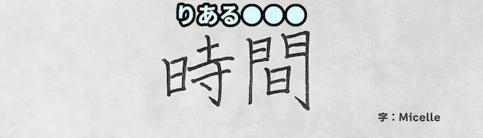 |
りあるたいむ | 実際に書かれた<時間|タイム>。 |
| Lv04_Ca014_0022 | ぎゃくば | 俗に、大勢や時流に逆らう言動をすること。 | |
| Lv04_Ca014_0023 | 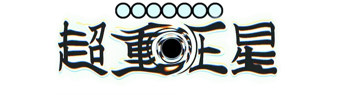 |
ぶらっくほーる | 宇宙空間に存在する天体のうち、重力が極めて強く光さえ脱出できないもの。 |
| Lv04_Ca014_0024 | け | 病気にかかっていないのに体調が悪いふりをすること。主にサボる目的で使う。 | |
| Lv04_Ca014_0025 | だがし | 主に子供向けに製造、販売されている安価な菓子類の総称。 | |
| Lv04_Ca014_0026 | ようがし | フォントがそうかと言われると微妙だけど、こう…雰囲気で… | |
| Lv04_Ca014_0027 | くさってもたい | すぐれたものは、古くなってもそれなりの値打ちは保っていることのたとえ。 | |
| Lv04_Ca014_0028 | ぴーすさいん | 手の人差し指と中指とを開いて、Ｖ字形を作るボディランゲージのひとつ。 | |
| Lv04_Ca014_0029 | 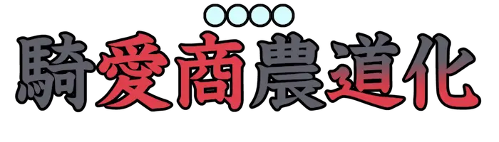 |
とらんぷ | 主に、計五十三枚のカードで構成された室内用の玩具のひとつ。 |
| Lv04_Ca014_0030 | 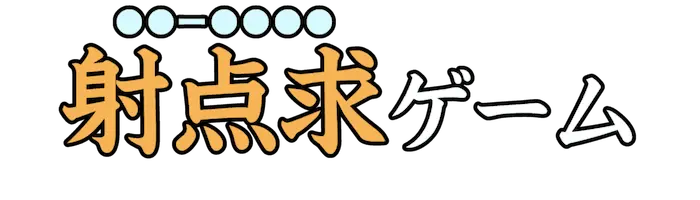 |
しゅーてぃんぐ | コンピュータゲームのジャンルのひとつ。ビームや弾丸などを使い敵を倒していく。 |
| Lv04_Ca014_0031 | 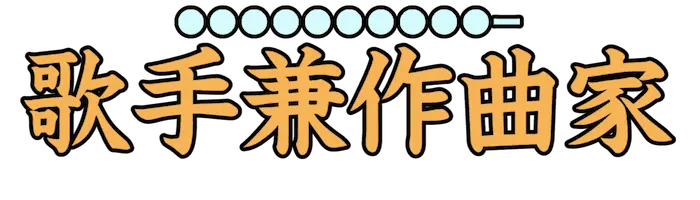 |
しんがーそんぐらいたー | 作詞、作曲、歌唱を一人でこなすミュージシャンのこと。 |
| Lv04_Ca014_0032 | ぴあす | 耳や鼻、腹など、身体の一部に穴を空けて取り付ける装身具の総称。 | |
| Lv04_Ca014_0033 | 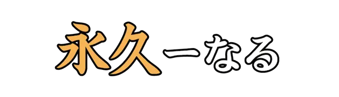 |
えた | 俗に、ゲームが完成せずに放置されること。送り仮名が『ー』から始まるのヤバいね。 |
| Lv04_Ca014_0034 | くりてぃか | <ＴＲＰＧ|テーブルトーク・ＲＰＧ>において『絶対成功』などを表す語。奇跡的な大成功を得ることができる。 | |
| Lv04_Ca014_0035 | するー | ||
| Lv04_Ca014_0036 | ない | 数の名。八の次、十の前の自然数。 | |
| Lv04_Ca014_0037 | あど | ［PR］迫りくる常識漢字や難読漢字を答えるゲームです。スマホアプリ版も絶賛配信中！ | |
| Lv04_Ca014_0038 | 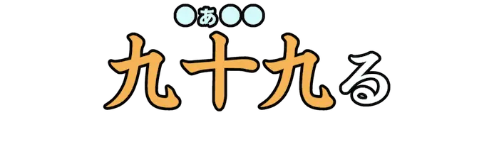 |
ふぁんぶ | <ＴＲＰＧ|テーブルトーク・ＲＰＧ>において『絶対失敗』などを表す語。極めて程度の大きい不運な結果をもたらす。 |
| Lv04_Ca014_0039 | みんしゅう | 左のアイコンは、鏡を表しています。つまり『か』が『み』になります。 | |
| Lv04_Ca014_0040 | くいだおれ | 飲食にぜいたくをして、財産をなくすこと。 | |
| Lv04_Ca014_0041 | 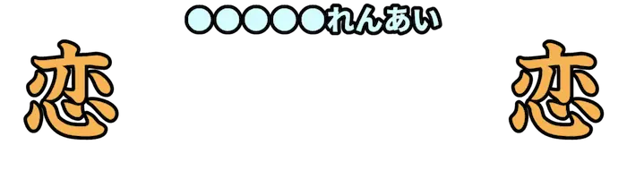 |
えんきょりれんあい | 恋人同士の居住地の距離が離れた状態での恋愛関係。 |
| Lv04_Ca014_0042 | 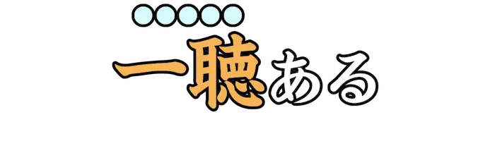 |
わんちゃん | ある事柄に対し、『不可能ではない』ことを言及するための若者言葉。もとは麻雀用語。 |
| Lv04_Ca014_0043 | ばらばら | まとまっていたものが分散するさま。また、細かく分断されるさま。 | |
| Lv04_Ca014_0044 | くねくね | 幾度も曲がって続くさま。蛇や道など、細く長いものに対していう。 | |
| Lv04_Ca014_0045 | うわがきほぞん | データを上書きしています。本体の電源を切らないでください… | |
| Lv04_Ca014_0046 | ゆびお | 指を折り曲げ数えること。また、多くの中で群を抜いてすぐれていること。屈指。 | |
| Lv04_Ca014_0047 | ふとめん | 直径が太い麺のこと。食べ応えやコシのある食感に用いる。 | |
| Lv04_Ca014_0048 | ばっち | 抜け目がなく、万全であるさま。 | |
| Lv04_Ca014_0049 | かざぐるま | 風によって回る羽根のついた車の玩具。 | |
| Lv04_Ca014_0050 | 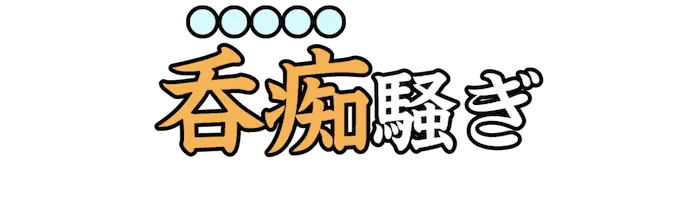 |
どんちゃん | 太鼓や三味線などの鳴り物入りで、にぎやかに遊ぶような騒ぎ。 |